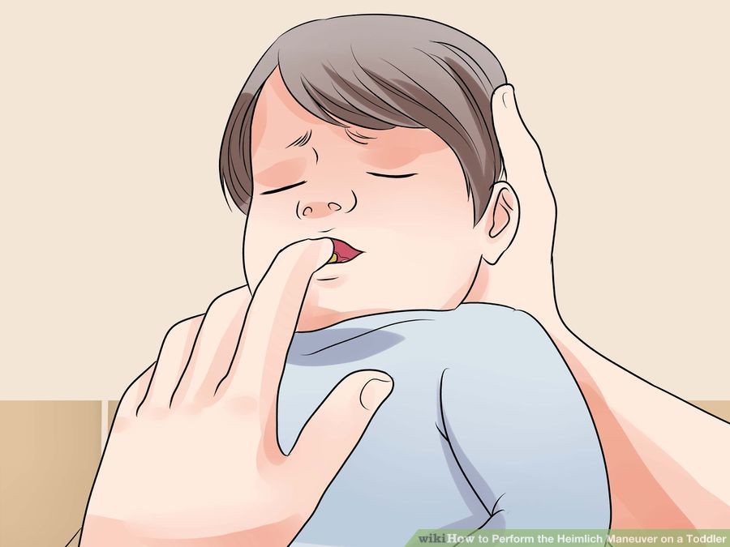

How to Perform the Heimlich Maneuver on a Toddler
Table of Contents
Part 1: Assessing the Situation
Part 2: Performing the Heimlich Maneuver
Part 3: Helping an Unconscious Choking Child
Part 1 - Assessing the Situation
- See if your toddler can speak. When someone is choking, they'll lose the ability to speak because air can't get through. Therefore, if you ask your toddler a question and she can't reply, she may be choking.
- Look to see if the toddler is having trouble breathing. You may notice that he's having trouble drawing breaths. He may also be making weird noises when he's breathing, such as a high-pitched noise when drawing in a breath.
- Look for weak coughing. Your toddler may be trying to cough up what's in her throat and failing. Therefore, the cough will be weak. A heavy cough likely indicates that enough air is getting through that she's not choking.
-
Check for blue tinges. Toddlers who aren't breathing may start turning blue around the edges. For instance, you may notice bluish or dusky tinges on her fingernails, lips, or skin.
- However, be aware that children and toddlers compensate much better than adults and may not turn blue as fast as an adult would.
- Avoid intervening if the child is able to speak. If the child is able to speak or breathe well, don't start Heimlich. The same goes if the child is able to cough hard. However, be watching to make sure the symptoms don't suddenly worsen.
-
See if the toddler is conscious. Choking can cause a toddler to pass out. See if he can look at you when you talk by asking him a question. You'll likely need this information when you call 911. You'll also need to move on to the steps for an unconscious choking toddler if he's not conscious.
- You can also lightly flick the bottom of a toddler's foot to check for consciousness.
- Ask someone to call 911. If you are not alone with the child, ask someone to call 911. If you are, you should try the Heimlich maneuver before calling 911.
- Ask for consent. If a parent is present, quickly ask for consent. Seconds count when saving a life. If a parent is not present, Good Samaritan laws in your state should cover any action you take in good faith to save the child's life.
Part 2 - Performing the Heimlich Maneuver
- Bend the child over. Have the child bend over at the waist. Place your hand under her chest for support.
- To perform this maneuver properly on a child, you'll likely need to kneel on the floor.
- Don't try to pull the object out of the child's mouth if the child is conscious. Try to get it out with the Heimlich maneuver instead.
- You can also place a child across your lap face down, if that is more feasible.
- Give five back blows. Use the heel of your hand. Whack the child on the back directly between the shoulder blades five times.
- These blows should be fairly hard. They shouldn't be hard enough to knock the child over with your support, but they do need to be relatively sharp.
- The American Heart Association doesn't teach back blows when performing the Heimlich; the Heimlich alone (abdominal thrusts) can be effective without them.
- Look to see if the object has dislodged. You may see the object fly out, or you may notice the child has started breathing again.
- Put your arms around the child. Use one hand to make a fist and place it directly above the child's navel. Try to get below the breastbone. Cover your fist with the other hand.
- Pull upward. Pull your fists upward into the child's abdomen. Make this thrust quickly. Repeat four times or until you notice the object choking the child dislodges.
- Call 911. If no one is around and you've tried the Heimlich once, be sure to call 911. You want help to be on the way. If you asked someone else to call 911, make sure the person has done it.
- Check to see if it worked. If it didn't work, continue moving back and forth between back blows and abdominal thrusts. Keep going until you see the object come out, the child begins to breathe normally again, or the child becomes unconscious.
Part 3 - Helping an Unconscious Choking Child
- Lay the child on the floor. Once the child loses consciousness, place him on the floor on his back. He should be on a flat, hard surface. Make sure to do so gently.
- Check for an object. Do a sweep of the child's mouth. Gently tilt her head to the side and open her mouth, and use a finger to sweep out an object if you see one. Only try to remove the object if it's loose; if it's stuck in the child's throat, don't try to move it, as you can push it further down.
- Try two rescue breaths. Tilt the child's head back to open up the airway by lifting the chin. Hold his nose so air can't escape. Cover his mouth with your mouth and blow air in twice, blowing for about a second each time. Watch his chest to see if it rises. If it doesn't, move on to chest compressions.
- If you're having trouble pinching his nose and covering his mouth with yours, you can try to cover his nose and mouth with your mouth.
- Use chest compressions. Find the correct place by feeling where the bottom of the ribs meet. You should be about an inch above that on the child's chest. Put one hand on top of the other, flat on the chest. The heel of your hand should be in the center of the child's chest. Push the chest about 1/3 of the way down, depth-wise (about 2 inches). Try to go quickly; you should be aiming for 100 compressions a minute. Count to 30 compressions.

- Check for an object again. Your chest compressions could have dislodged the object that was choking the child. Open her mouth and look. Use your finger to sweep out any object. Check to see if the child is breathing by watching her chest.
- Continue with CPR. Continue switching between two rescue breaths and thirty chest compressions, checking for an object in the mouth in between. Always remember to tilt the child's chin up for the rescue breaths. Keep going until the child's condition changes or help arrives to take over.
- Seek immediate medical attention. Even once the child has recovered, take him to the doctor anyway. You want to make sure he's suffered no permanent damage.